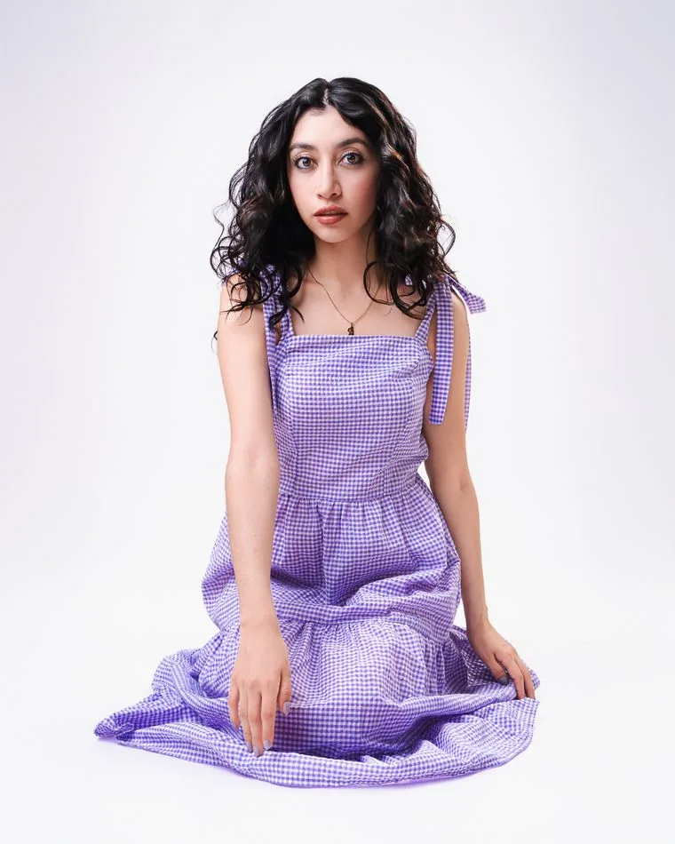
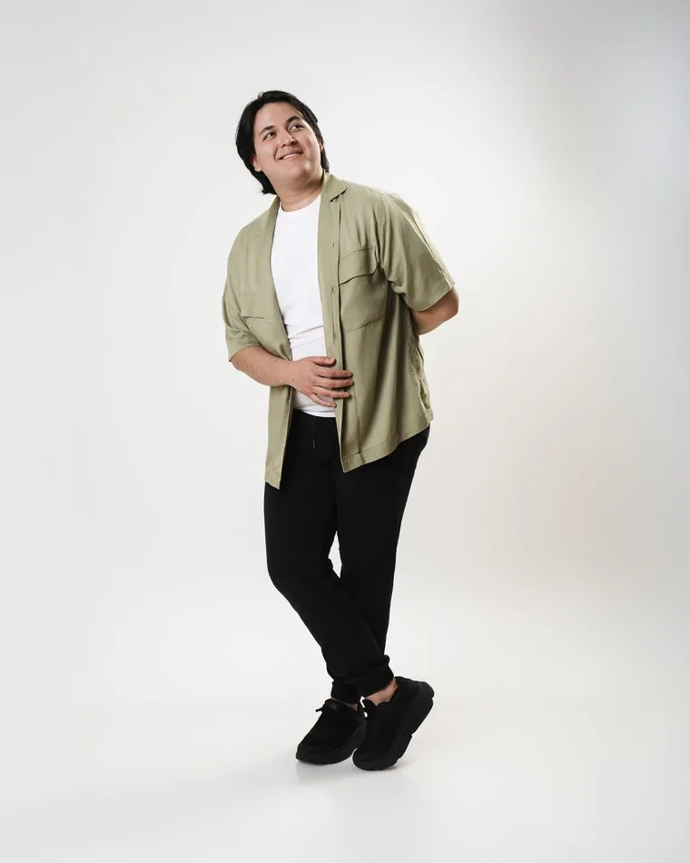
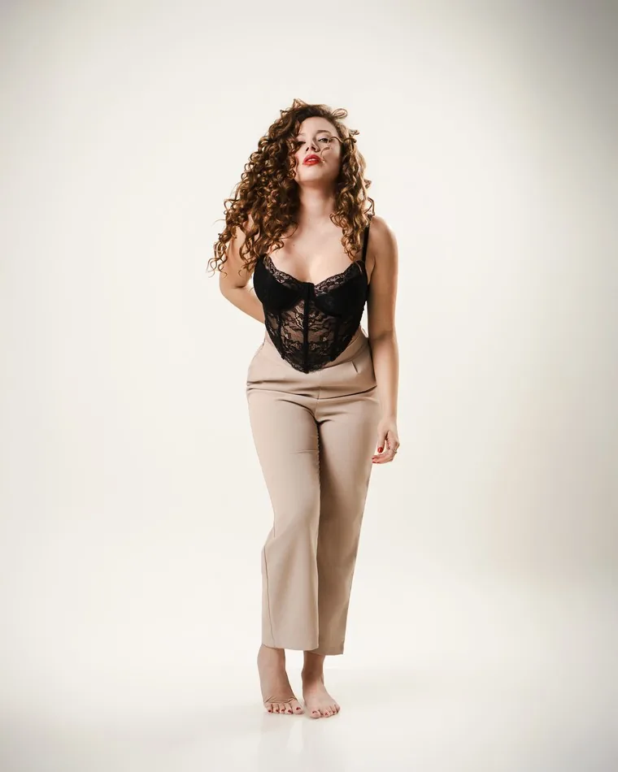
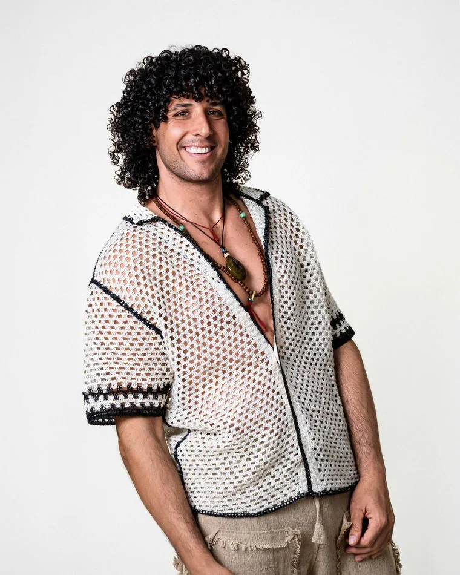
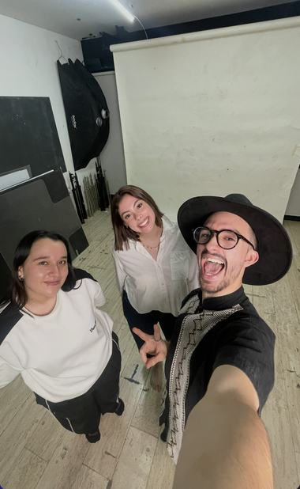
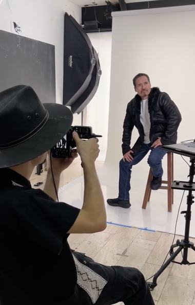
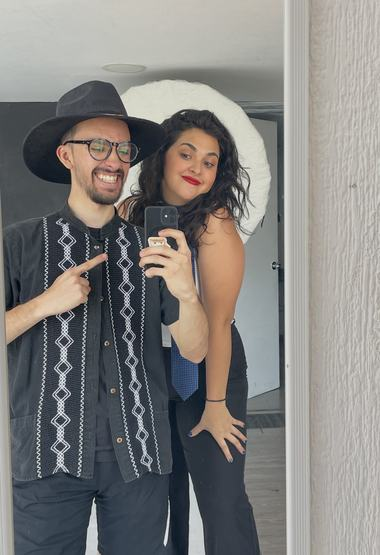
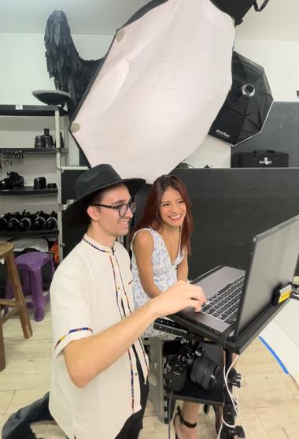

Pre-sesión: platicamos en una junta para saber qué quieres mostrar, a quién y para qué.
Tu Minibook: una hora frente a la cámara, con dirección en cada toma para que sueltes el cuerpo y la mirada, hasta lograr dos versiones de ti con personalidades distintas.
Tu Acting Link: el resultado se convierte en tu página web actoral, lista para que cualquier director de casting entienda quién eres en diez segundos.
30% de anticipo para asegurar tu lugar, el resto se liquida antes de tu sesión.
Preapartas tu cupo por WhatsApp — así reservamos tu lugar mientras confirmas.
Apartas tu lugar con el 30% de anticipo; en cuanto llega la transferencia, confirmamos por WhatsApp.
Agendamos tu junta de pre-sesión para afinar el enfoque antes de que prendamos cámara.
Tu día: una hora frente a cámara, dos cambios de ropa, sin pausas que te saquen del personaje.
Integramos tus fotos editadas y tu Acting Link a más tardar 5 días hábiles. Listas para tus próximos castings.
Fotos editadas: en 2 a 5 días hábiles después de tu sesión.
Tu Acting Link: listo en máximo 5 días.
2 y 8 de diciembre
Horario: 10 am a 3 pm
Ese día arranca la plataforma de Acting Links, y tu página queda visible y lista para compartir en tus próximos castings.




¿Ya viste el carrusel? :
Ningún resultado se parece a otro.
Para el actor que está leyendo esto:
Antes de ser fotógrafo de retrato para actores, dirigí actores en cine — incluso fui director de casting en la ópera prima de un amigo. Ahí noté algo que ningún director enseña: la mayoría actúa desde el “quiero tener la chamba”, sin pararse nunca a cuestionarse ni a voltear a verse a ellos mismos.
Y no era falta de talento.
De esa grieta nació todo mi desmadre: Monty Experience — un proceso diseñado para actores dispuestos a reconectar consigo mismos.
Sé lo que se siente ver tu book y no reconocerte en él. Yo también pasé por ahí.
Por eso no arrancamos con la sesión, arrancamos con una conversación honesta sobre qué hay detrás de lo que quieres lograr — y de ahí personalizamos tu sesión, a tu medida.
Y dirás: normalmente cuando renuevas tu book te queda la misma pregunta — ya tengo mi book, ¿ahora qué chingados hago? El proceso no se queda ahí: cada sesión cierra con un seguimiento, un asesoramiento para trazar la ruta.
Actualmente acompaño a actores que sienten que se quedaron fuera del juego, a volver a competir con una imagen que por fin los represente en cada casting.
Dale play. Súbele al volumen. Esto no lo actué yo.

Bri Navarro
Leonardo Alonzo
Lupita Medina
Paty GuzmánNo es una sesión completa ni un relanzamiento de marca. Es un cambio de outfit, una hora de cámara y material fresco para cerrar tu año con fotos nuevas.
Una hora frente a cámara con dos cambios de ropa, tus fotos editadas y tu Acting Link integrado — todo listo para que salgas a castear con material actual.
Los lugares se van llenando según se van apartando. En el calendario de arriba puedes ver qué fechas quedan abiertas al momento de reservar tu cupo.
Es tu trabajo, encontrable donde te busquen: una página con tus fotos ya lista para compartir en castings, agencias o redes, sin que tengas que armar nada tú.
Primero confirmas tu cupo por WhatsApp. Después, con el 30% de anticipo tu lugar queda formalmente reservado — y en cuanto llega la transferencia, lo confirmamos de nuevo por WhatsApp.
$3,200 MXN (antes $3,800). El 30% asegura tu lugar y el resto se liquida antes de tu sesión.
“No hay nada más caro que perder un papel que tanto quieres por un book desactualizado.”
Cupos limitados para esta dinámica: 8 disponibles.
Culo si no
te descubres.
Mándame mensajito por WhatsApp.